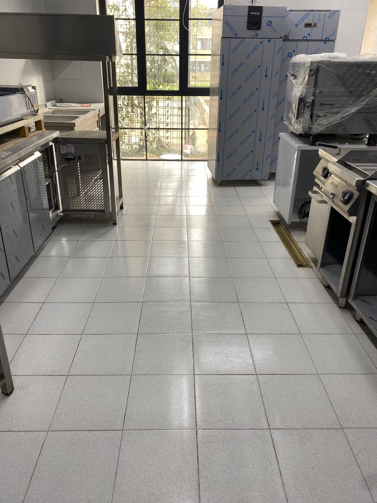

Dubinsko čišćenje koje prostoru vraća kompletno osveženje, ne samo osnovno održavanje.
Ova usluga je idealna kada želite da prostor izgleda uredno, rasterećeno i spremno za svakodnevni boravak. Najviše vrednosti donosi u kuhinjama, kupatilima i zonama koje nose najveći vizuelni teret prostora.
- Čišćenje stanova i kuća sa fokusom na detalje
- Dubinsko čišćenje najzahtevnijih površina
- Rezultat koji se vidi odmah po završetku